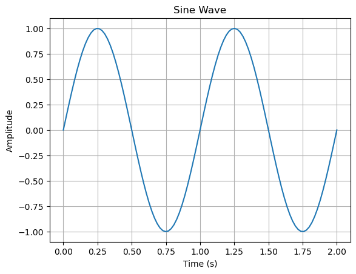
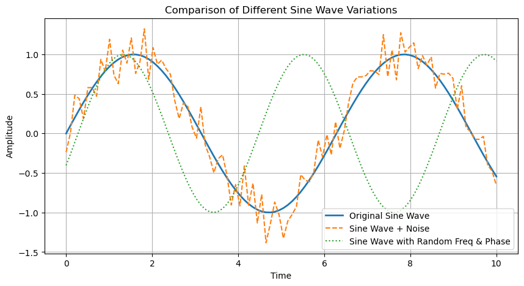

优化算法#
优化算法：坐标下降法（Coordinate Descent）、最小角回归（LARS） 和 梯度下降法（Gradient Descent）
梯度下降法（Gradient Descent） 基于梯度信息，沿着函数反梯度方向下降，所有参数更新 给定目标函数 $f(\boldsymbol{\beta}) $，梯度下降法的更新规则是： $$ \boldsymbol{\beta}^{(t+1)} = \boldsymbol{\beta}^{(t)} - \eta \nabla f(\boldsymbol{\beta}^{(t)}) $$
坐标下降法（Coordinate Descent） 基于梯度信息，沿着函数反梯度方向下降，但是每次只更新一个参数，即一个偏导方向。
坐标下降法 实际上可以看作是梯度下降法的一种特殊形式，它在每次更新时只沿着某一方向（即某个特征的方向）进行调整。具体来说，坐标下降法的更新规则是： $$ \beta_j^{(t+1)} = \beta_j^{(t)} - \eta \frac{\partial f(\boldsymbol{\beta})}{\partial \beta_j} $$
最小角回归（LARS） 计算对特征系数对残差的贡献，找到最相关的特征，进行更新 $$c_j = \mathbf{x}_j^T \mathbf{r}$$
正弦波 Sin Wave#
$$ y = A \sin(2\pi f t + \phi) $$
其中：
$ A$（振幅）：波的高度，决定波的最大值和最小值。
$f $（频率）：每秒振荡的次数，单位是赫兹（Hz）。
$t$（时间）：波随时间的变化。
$ \phi$（相位）：波的起始位置，影响波的左右偏移。
import numpy as np
import matplotlib.pyplot as plt
---------------------------------------------------------------------------
ModuleNotFoundError Traceback (most recent call last)
Cell In[1], line 1
----> 1 import numpy as np
2 import matplotlib.pyplot as plt
ModuleNotFoundError: No module named 'numpy'
t = np.linspace(0,2,100) # 时间序列
y = np.sin(2*np.pi*1*t) # 频率1，一秒振动一次（一周期）
plt.plot(t, y)
plt.xlabel("Time (s)")
plt.ylabel("Amplitude")
plt.title("Sine Wave")
plt.grid()
plt.show()

import numpy as np
import matplotlib.pyplot as plt
rng = np.random.RandomState(42)
times = np.linspace(0, 10, 100)
# 方式 1：固定正弦波 + 直接加噪音： 正弦波上下抖动
y_clean = np.sin(times)
y_noisy = y_clean + np.random.normal(0, 0.2, size=times.shape)
# 方式 2：改变正弦波的频率和相位 ： 正弦波变形
random_freq = 1.0 + rng.randn(1) # 频率有轻微变化
random_phase = 3 * rng.randn(1) # 相位有轻微变化
y_variable = np.sin(random_freq * times + random_phase)
# 画图
plt.figure(figsize=(10, 5))
plt.plot(times, y_clean, label="Original Sine Wave", linewidth=2)
plt.plot(times, y_noisy, label="Sine Wave + Noise", linestyle="dashed")
plt.plot(times, y_variable, label="Sine Wave with Random Freq & Phase", linestyle="dotted")
plt.xlabel("Time")
plt.ylabel("Amplitude")
plt.title("Comparison of Different Sine Wave Variations")
plt.legend()
plt.grid()
plt.show()

标准化#
$$ X_{ij} = \frac{X_{ij}}{\sigma_j} $$ $$ \sigma_j = \sqrt{\frac{1}{n} \sum_{i=1}^{n} (X_{ij} - \bar{X}_j)^2} $$ 标准化就是 数据 / 标准差。 让数据量纲同一，可以比较
X /= X.std(axis=0) 让每列的标准差变成 1，但均值不变
StandardScaler().fit_transform(X) 让每列均值变成 0，标准差变成 1
贝叶斯#
核心就是 根据数据(似然函数) 矫正先验， 得到后验知识。
贝叶斯家族是根据 超参数怎么处理 / 怎么求后验， 产生各种名字
类型 |
超参数处理 |
计算后验 |
例子工具 |
优点 |
缺点 |
|---|---|---|---|---|---|
普通贝叶斯 |
固定 |
直接计算后验 |
解析解 |
简单快速 |
需手动调参 |
经验贝叶斯 |
数据点估计 |
优化边缘似然 |
scikit-learn |
自动调参，较快 |
丢不确定性 |
完全贝叶斯 |
加超先验分布 |
MCMC/变分推断 |
PyMC3, Stan |
保留不确定性 |
计算复杂 |
贝叶斯估计 |
泛指估计方式 |
点估计或分布 |
视具体方法 |
灵活 |
非具体方法 |
参数多不多：只有主要参数，还是有超参数？
怎么算后验：精确算，还是近似算？
超参数咋办：固定、估计，还是给分布？
贝叶斯核心是 最大化似然函数吗？ 结果是优化后验概率？
Log的意义：#
稳定数据分布
优化梯度计算
避免概率数值下溢。
1. 对数变换
许多数据分布都是右偏的（指数、长尾）。
对数变换可以稳定方差：更近正态分布（许多模型的假设）；减少异常值影响
对数概率（Log-Likelihood）
在概率模型（如 贝叶斯模型、高斯混合模型（GMM）、隐马尔可夫模型（HMM））中，经常计算 对数似然（log-likelihood）： $$ \log P(X|\theta) = \sum \log P(x_i|\theta) $$
直接使用概率可能会导致 数值下溢（特别是多个小概率连乘）。
取对数后，连乘变加法，计算更稳定，梯度计算也更容易处理。
正态分布的 log 计算
正态分布的概率密度函数（PDF）： $$ P(x) = \frac{1}{\sqrt{2\pi\sigma^2}} e^{-\frac{(x - \mu)^2}{2\sigma^2}} $$ 取对数后： $$ \log P(x) = -\frac{(x - \mu)^2}{2\sigma^2} - \log \sqrt{2\pi\sigma^2} $$ 好处：
简化梯度计算（常用于 MLE 估计）。
用于高斯过程（Gaussian Process），求解核函数的似然优化。
用于 KL 散度（Kullback-Leibler Divergence） 计算分布之间的差异。
Softmax & 交叉熵
Softmax 计算类别概率： $$ p_i = \frac{e^{z_i}}{\sum e^{z_j}} $$ 交叉熵损失： $$ L = -\sum y_i \log p_i $$
log 让概率乘法变加法，避免下溢。
交叉熵损失 = 负对数似然（Negative Log-Likelihood, NLL），广泛用于分类任务。
信息论中的作用
在信息论和机器学习交叉领域，log 也常用于：
熵（Entropy）：$$ H(X) = -\sum P(x) \log P(x) $$
KL 散度：衡量两个分布的差异。